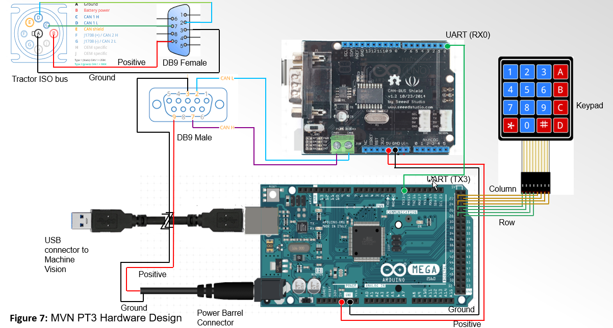
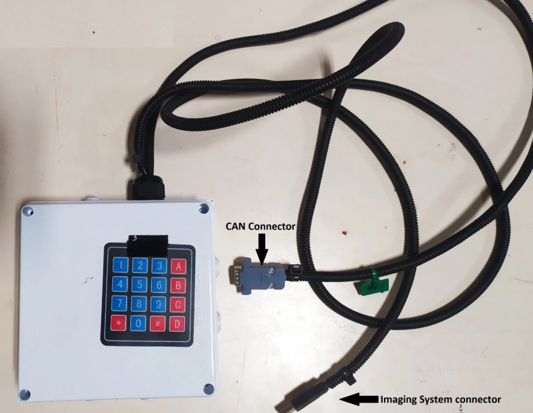

Mechatronics & Embedded Systems Engineer · Precision Agriculture
I build embedded systems for agricultural machinery: bare-metal and RTOS firmware, ISOBUS / CAN integration, ECUs, and precision spraying systems mounted and tested on real equipment.
Machine vision + individual nozzle control on a John Deere UTV
Equipped a John Deere Gator UTV with Pentair Hypro ProStop-E electric nozzle bodies for individual nozzle on/off control, driven by a machine vision camera. A color-segmentation model detects orange targets on the ground.
Built the bridge between vision and spraying: C++ firmware converts each machine vision detection into ISOBUS (CAN) messages that the ProStop-E system executes on the matching nozzle.
Field tests validated the vision-to-ProStop-E communication chain and measured how travel speed affects detection-to-spray latency.
CAN busISOBUSC++MicrocontrollersSeeed CAN-BUS ShieldMCP2515Machine visionHypro ProStop-EJohn Deere UTVLatency testing

Hardware design. Tractor ISOBUS plug (CAN H / CAN L, battery power, ground) → DB9 → Seeed CAN-BUS Shield on Arduino Uno → UART (RX0 ↔ TX3) → Arduino Mega 2560 with 4×4 keypad for operator input → USB to the machine vision computer. Powered from the ISOBUS battery line through a barrel connector.

Controller enclosure. 3D-printed box housing the microcontrollers and CAN shield, with the 4×4 keypad on the lid, a DB9 CAN connector to the ISOBUS and a USB lead to the imaging system.
See & Spray precision sprayer
Mounted and commissioned a camera-based spot-spraying system on a CASE IH commercial boom sprayer: cameras, industrial computers, CAN modules and rate-controller hardware across a 60-nozzle boom.
ISOBUSCAN busMachine visionRavenGPS RTK
Ag drone: flight control & sensors
Flight control, camera and GPS-RTK integration, with CAN, ISOBUS and UART links between system components.
STM32FreeRTOSGPS RTKUART
Qt HMI for real-time embedded systems
Operator interface for a real-time embedded controller, built in Qt.
QtC++Embedded Linux
Experience
Embedded Systems Engineer
AIES Research Group, Dalhousie · Truro, NS · Jan 2025 – now
Precision spraying systems on commercial sprayers (CASE IH, Raven, Pentair)
ISOBUS / CAN connectivity, telematics, GPS RTK data management
Automation Engineering Consultant
Coatex Technology · Dartmouth, NS · Sep 2025 – now
Ladder logic for Siemens PLCs; sensor integration and motion control
Debugging and optimizing production lines
Embedded Software Engineer
STMicroelectronics
Ethernet APIs for STM32 microcontrollers
Ported secure communication / file-transfer libraries to the STM32 ecosystem
Skills
Languages
C, C++, Rust, Python, Assembly, ST text
Platforms
STM32, ESP32, ARM Cortex-M, Raspberry Pi, FreeRTOS, Embedded Linux
Protocols
ISOBUS, CAN bus, Ethernet, SPI, UART, BLE, Zigbee
Design
Electrical drawing, PCB design, SolidWorks, CATIA
Education
M.Sc. Precision Agriculture & Agricultural Systems
Dalhousie University · agricultural machinery focus